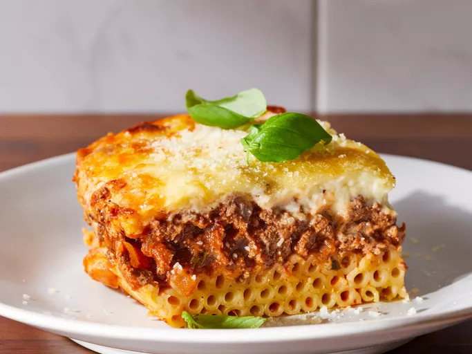

Sintagi gia pastitsio

Description
Ingridients
- 500g pasta (penne or ziti)
- 2 cups béchamel sauce
- 1 lb ground beef or lamb
- 1 onion, chopped
- 2 cups tomato sauce
- 1/2 cup grated Parmesan cheese
- 2 cloves garlic, minced
- 1 tsp cinnamon
- Salt and pepper to taste
Steps
- Preheat oven to 350°F (175°C).
- Cook pasta according to package instructions until al dente. Drain and set aside.
- In a large skillet, sauté chopped onion and minced garlic until translucent.
- Add ground beef or lamb to the skillet and cook until browned. Drain excess fat.
- Stir in tomato sauce, cinnamon, salt, and pepper. Simmer for 15 minutes.
- In a baking dish, layer half of the cooked pasta, followed by the meat sauce, and then the remaining pasta.
- Pour béchamel sauce over the top and sprinkle with grated Parmesan cheese.
- Bake in the preheated oven for 30-40 minutes, or until the top is golden brown.
- Let it cool for a few minutes before serving. Enjoy!
Home